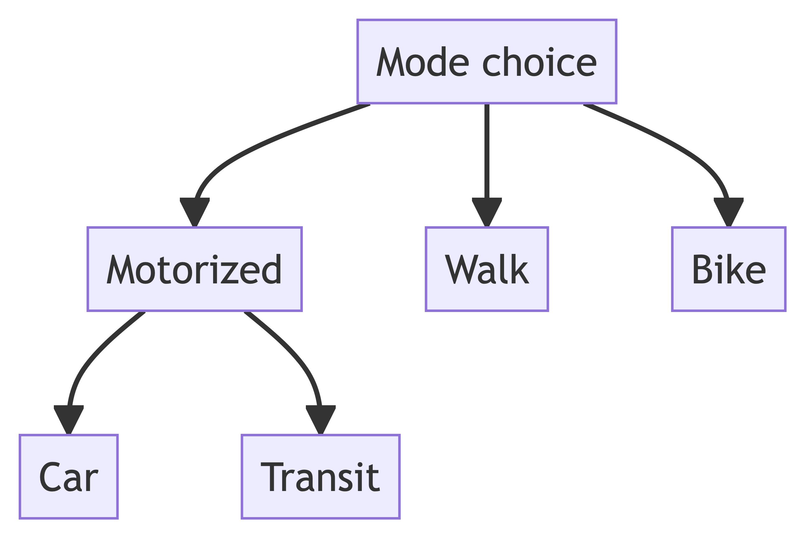
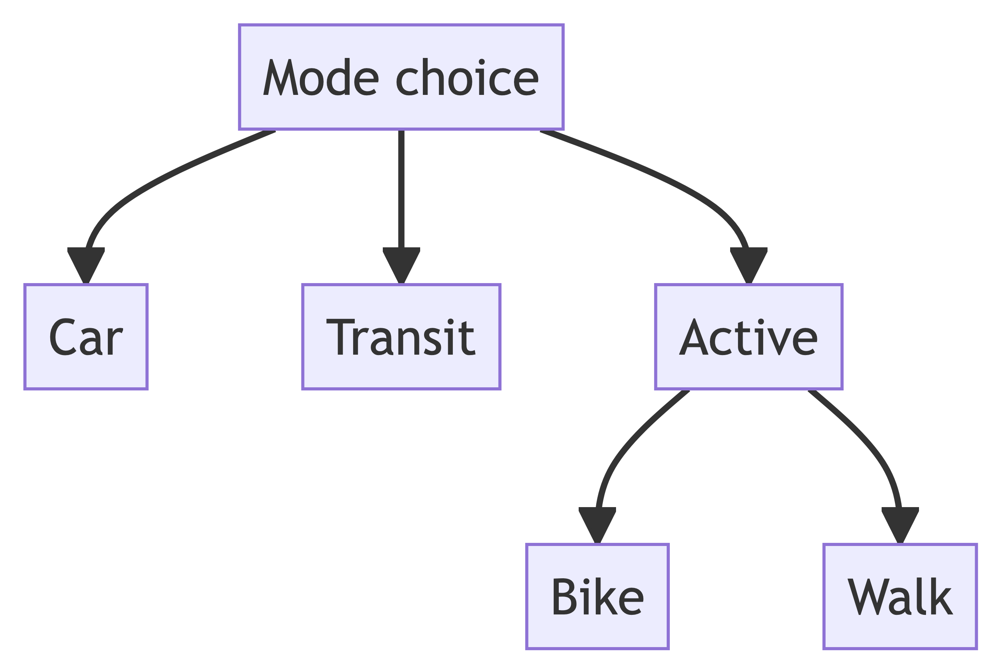
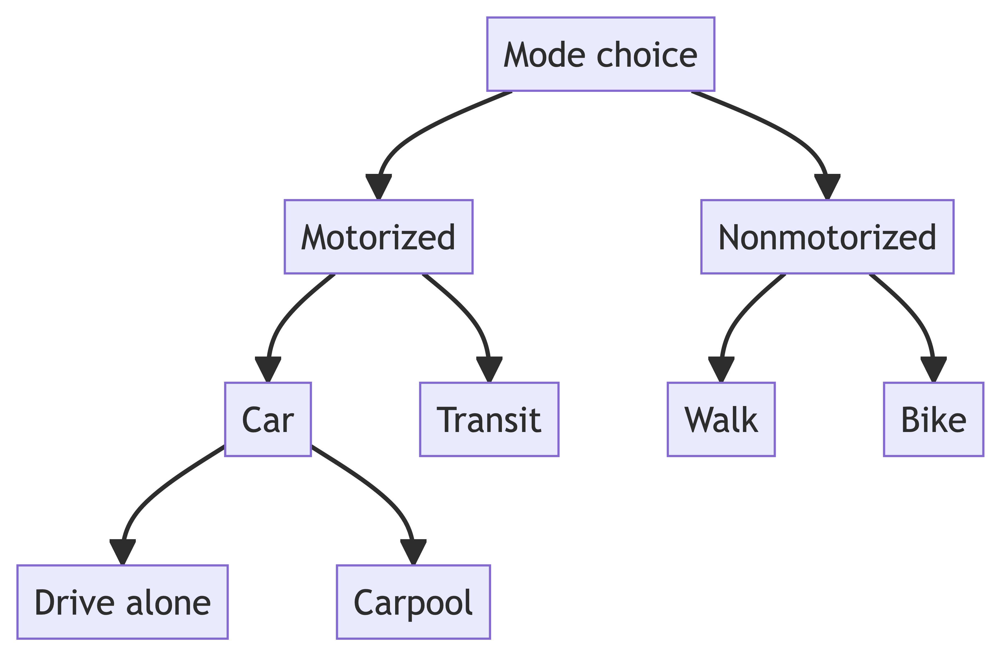

Introduction to Discrete Choice Models
Matt Bhagat-Conway
Odum Institute
University of North Carolina at Chapel Hill
About me
- Assistant professor of City and Regional Planning
- Research focus: transportation modeling and simulation
- Heavy use of discrete choice models
- PhD in Geography from Arizona State
- Three years experience as transportation modeling software developer
Before we go any further
- Install Python
- Install necessary Python packages using
pip:biogeme,statsmodels,pandas,numpy,scipy - Slides, code, and data at https://projects.indicatrix.org/odum-discrete/
What are discrete choice models?
- Regression models of discrete outcomes
- Most are consistent with random utility theory, an theory of economically rational decisionmaking
What are discrete choice models used for?
- Economic analysis
- Particularly willingness-to-pay/valuation
- Marketing
- Healthcare
- Transportation planning
The simplest discrete choice model: binary logistic regression
- You may have also just heard this called “logistic regression”
- If you’ve taken regression you’re probably familiar with this model
- It is used for binary (two outcome) variables, e.g.
- fraudulent or not
- work in person or work at home
- in foreclosure or not
- etc.
The binary logistic regression model: conceptually
- We are never going to be 100% sure of one outcome or the other, so we want to model the probability of the outcomes
- We could just assign 1 to one outcome and 0 to the other, and run a linear regression model
- This is the linear probability model
The problem with the linear probability model
- Predicted values are not constrained between 0 and 1
Binary logistic regression
- Instead of predicting the probability, we predict the log-odds (aka logit)

Binary logistic regression: the math
y^* = \alpha + \beta_1 x_1 + \beta_2 x_2 \cdots + \epsilon
\epsilon \thicksim \mathrm{Logistic} p(y = 1) = p(y^* > 0) = \frac{e^{y^*}}{1 + e^{y^*}}
Interpreting a binary logistic regression model
| Coefficient | Std. Err. | t | p | |
|---|---|---|---|---|
| Intercept | 0.726 | 0.247 | 2.944 | 0.003 |
| Age | -0.023 | 0.005 | -5.065 | 0 |
| College degree | 0.927 | 0.131 | 7.102 | 0 |
| Male | 0.252 | 0.128 | 1.967 | 0.049 |
| n | 1171 | |||
| Log-likelihood | -755.397 | |||
| Log-likelihood at constants | -798.247 | |||
| Pseudo-R² | 0.0536795 |
- Are older people more likely to be able to WFH?
- Are college-educated people?
- Are men?
Statistical significance and p-values
- Coefficients are approximations to population-level parameters, and contain sampling error because we haven’t sampled the entire population
- The standard error (\sigma) is a measure of how precise the coefficient is
- We assume coefficient estimates are asymtotically normal
- Based on a normal distribution, there is a 95% chance the population parameter is within 1.96 \times \sigma of the estimate
Statistical significance and p-values
- We can also perform a hypothesis test that the coefficient is different from 0
- To do this, we compute a z-value, which is just the coefficient divided by the standard error
- Put another way, the z-value is the number of standard errors between the coefficient and zero
- Large coefficients lead to large z-values
- Large standard errors (i.e. high uncertainty) lead to small z-values
Statistical significance and p-values
- z values larger in magnitude than 1.96 indicate that there is less than a 5% chance of observing a coefficient as larger or larger than the estimated coefficient if the true coefficient were zero
Statistical significance and p-values
- The p-value is the probability of observing a coefficient as large or larger in magnitude, if the true coefficient were zero
- Computed using the normal cumulative distribution function
- Usual rule is that p < 0.05 is statistically significant, but in larger datasets p < 0.01 or even p < 0.001 may be used
- For more information about the math, see the hypothesis testing section of any statistics textbook
- Logistic regression hypothesis tests are computed just like linear regression, except using the normal instead of t distribution
Odds ratios
| Coefficient | Std. Err. | t | p | |
|---|---|---|---|---|
| Intercept | 0.726 | 0.247 | 2.944 | 0.003 |
| Age | -0.023 | 0.005 | -5.065 | 0 |
| College degree | 0.927 | 0.131 | 7.102 | 0 |
| Male | 0.252 | 0.128 | 1.967 | 0.049 |
| n | 1171 | |||
| Log-likelihood | -755.397 | |||
| Log-likelihood at constants | -798.247 | |||
| Pseudo-R² | 0.0536795 |
- What does a “0.93 increase in log-odds” mean anyways?
- Because this is hard to interpret, we often use an odds ratio instead
- This is just the exponentiation of the coefficient
Interpreting odds ratios I
| Odds ratio | t | p | |
|---|---|---|---|
| Intercept | 2.067 | 2.944 | 0.003 |
| Age | 0.977 | -5.065 | 0 |
| College degree | 2.527 | 7.102 | 0 |
| Male | 1.287 | 1.967 | 0.049 |
| n | 1171 | ||
| Log-likelihood | -755.397 | ||
| Log-likelihood at constants | -798.247 | ||
| Pseudo-R² | 0.0536795 |
- Odds ratios measure the change in the odds of an event happening
- Odds is the probability of something happening divided by the probability of it not happening
- e.g. 5 to 1 odds means that out of 6 trials something will happen 5 times on average
- They are multiplicative, so an odds ratio of 1.287 means that men have 28.7% higher odds of being able to work from home
Interpreting odds ratios II
| Odds ratio | t | p | |
|---|---|---|---|
| Intercept | 2.067 | 2.944 | 0.003 |
| Age | 0.977 | -5.065 | 0 |
| College degree | 2.527 | 7.102 | 0 |
| Male | 1.287 | 1.967 | 0.049 |
| n | 1171 | ||
| Log-likelihood | -755.397 | ||
| Log-likelihood at constants | -798.247 | ||
| Pseudo-R² | 0.0536795 |
- What does an odds ratio of 0.977 mean?
- Each additional year of age is associated with 2.3% lower odds of being able to work from home
Odds ratios are not risk ratios
- Odds ratios are often misinterpreted as risk ratios, the percent change in the probability
- Men have 28.7% higher odds of being able to work from home, not 28.7% higher probability
- Many people say something like 28.7% more likely, but this is unclear that it refers to odds rather than probability
Running a logistic regression in Python
logistic_basic.py
import pandas as pd, statsmodels.api as sm
data = pd.read_csv("data/wfh_prediction_covidfuture.csv")
model = sm.Logit(
data.wfh_expectation, # dependent variables
sm.add_constant( # add an intercept to the dataframe
pd.get_dummies( # convert gender to a dummy variable
data[["age", "gender", "college"]],
)
.drop(columns=["gender_Female"]) # drop one category from dummy variable
.astype("float64") # convert everything to numeric
)
)
result = model.fit()
print(result.summary())Running a logistic regression in Python: results
| Dep. Variable: | wfh_expectation | No. Observations: | 1171 |
| Model: | Logit | Df Residuals: | 1167 |
| Method: | MLE | Df Model: | 3 |
| Date: | Sun, 14 Jul 2024 | Pseudo R-squ.: | 0.05368 |
| Time: | 17:33:17 | Log-Likelihood: | -755.40 |
| converged: | True | LL-Null: | -798.25 |
| Covariance Type: | nonrobust | LLR p-value: | 1.837e-18 |
| coef | std err | z | P>|z| | [0.025 | 0.975] | |
| const | 0.7258 | 0.247 | 2.944 | 0.003 | 0.243 | 1.209 |
| age | -0.0230 | 0.005 | -5.065 | 0.000 | -0.032 | -0.014 |
| college | 0.9273 | 0.131 | 7.102 | 0.000 | 0.671 | 1.183 |
| gender_Male | 0.2520 | 0.128 | 1.967 | 0.049 | 0.001 | 0.503 |
Exercise: add the black and hispanic variables to the model
logistic_black_hispanic.py
import pandas as pd, statsmodels.api as sm
data = pd.read_csv("data/wfh_prediction_covidfuture.csv")
model = sm.Logit(
data.wfh_expectation, # dependent variables
sm.add_constant( # add an intercept to the dataframe
pd.get_dummies( # convert gender to a dummy variable
data[["age", "gender", "college", "black", "hispanic"]],
)
.drop(columns=["gender_Female"]) # drop one category from dummy variable
.astype("float64") # convert everything to numeric
)
)
result = model.fit()
print(result.summary())Exercise: add the black and hispanic variables to the model: result
| Dep. Variable: | wfh_expectation | No. Observations: | 1171 |
| Model: | Logit | Df Residuals: | 1165 |
| Method: | MLE | Df Model: | 5 |
| Date: | Sun, 14 Jul 2024 | Pseudo R-squ.: | 0.05437 |
| Time: | 17:33:18 | Log-Likelihood: | -754.85 |
| converged: | True | LL-Null: | -798.25 |
| Covariance Type: | nonrobust | LLR p-value: | 3.164e-17 |
| coef | std err | z | P>|z| | [0.025 | 0.975] | |
| const | 0.7721 | 0.261 | 2.962 | 0.003 | 0.261 | 1.283 |
| age | -0.0237 | 0.005 | -5.072 | 0.000 | -0.033 | -0.015 |
| college | 0.9245 | 0.131 | 7.056 | 0.000 | 0.668 | 1.181 |
| black | 0.0801 | 0.232 | 0.346 | 0.729 | -0.374 | 0.534 |
| hispanic | -0.1971 | 0.201 | -0.979 | 0.327 | -0.592 | 0.197 |
| gender_Male | 0.2546 | 0.128 | 1.986 | 0.047 | 0.003 | 0.506 |
- Is either statistically significant?
An alternate conceptualization of the logistic regression model: random utility theory
- Random utility theory posits that choices have “utility” or value
- When faced with a set of options, individuals will choose the option with the highest utility
- We don’t observe everything that goes into utility, so there is random error
Logistic regression as a random utility model
- We define the systematic utility (i.e. no random error) of one alternative (e.g. working from home) as V: V_{wfh} = \alpha + \beta_1 x_1 + \beta_2 x_2 \cdots
The full utility U has an error term:
U_{wfh} = V_{wfh} + \epsilon_{wfh}
- Only differences in utility are meaningful, so we can arbitrarily define the systematic portion of the utility of the other option as zero
U_{notwfh} = 0 + \epsilon_{notwfh}
The probability of working from home then becomes
P\left(U_{wfh} > U_{notwfh}\right)
Error term distribution
- We assume the \epsilon’s are Gumbel-distributed
- The Gumbel distribution is an approximation of the normal distribution with some attractive properties
- The important property at the moment is that the difference of two Gumbel-distributed variables is Logistic-distributed
- Just like the error term in our logistic regression model
Showing the equivalence to the binary logistic regression model I
We have
P\left(U_{wfh} > U_{notwfh}\right)
which we can re-write as
P\left(V_{wfh} + \epsilon_{wfh} - (0 + \epsilon_{notwfh}) > 0\right)
Showing the equivalence to the binary logistic regression model II
- Since the difference of our Gumbel-distributed error terms is Logistic-distributed, we have
P\left(V_{wfh} + \epsilon_{\Delta} > 0\right)
with \epsilon_\Delta Logistic-distributed, which is the same as our formula for logistic regression.
Estimating our binary logistic regression as a random utility model
- We’re going to specify our logistic regression model as a random utility model
- We’re going to use the Biogeme package to do so
Estimation code
biogeme_binary.py
import biogeme.database as db, biogeme.biogeme as bio
from biogeme import models
from biogeme.expressions import Beta, Variable
import pandas as pd
df = pd.read_csv("data/wfh_prediction_covidfuture.csv") # read data
data = db.Database("WFH",
pd.get_dummies(df)
.drop(columns="gender_Female")
.astype("float64")
) # convert to Biogeme format
# specify coefficients - all start at zero, have no bounds (None, None), and are
# estimated rather than fixed (0)
alpha = Beta("Intercept", 0, None, None, 0)
b_age = Beta("b_age", 0, None, None, 0)
b_college = Beta("b_college", 0, None, None, 0)
b_male = Beta("b_male", 0, None, None, 0)
# and specify the variables we want to use
age = Variable("age")
college = Variable("college")
male = Variable("gender_Male")
# specify utility functions
V = {
# outcome 1 is WFH
1: (alpha + b_age * age + b_college * college + b_male * male),
# outcome 0 is non-WFH
0: 0
}
# we also need to define the availability (more on this later)
av = {0: 1, 1: 1}
# now, set up what type of model we want (logit), what the utility functions are,
# what the availability variables are, and what the dependent variable is
logprob = models.loglogit(V, av, Variable("wfh_expectation"))
model = bio.BIOGEME(data, logprob)
model.modelName = "biogeme_binary"
model.calculateNullLoglikelihood(av)
result = model.estimate()
assert result.algorithm_has_converged()
print(result.shortSummary())
print(result.getEstimatedParameters())Result
Results for model biogeme_binary
Nbr of parameters: 4
Sample size: 1171
Excluded data: 0
Null log likelihood: -811.6753
Final log likelihood: -755.3974
Likelihood ratio test (null): 112.5559
Rho square (null): 0.0693
Rho bar square (null): 0.0644
Akaike Information Criterion: 1518.795
Bayesian Information Criterion: 1539.057
Value Rob. Std err Rob. t-test Rob. p-value
Intercept 0.725756 0.246210 2.947712 3.201357e-03
b_age -0.023037 0.004531 -5.084153 3.692710e-07
b_college 0.927291 0.130311 7.115971 1.111333e-12
b_male 0.251951 0.127537 1.975508 4.821053e-02Numpy error
numpy2.0 was released a few weeks ago, andbiogemeis not yet compatible, you may get this message
A module that was compiled using NumPy 1.x cannot be run in
NumPy 2.0.0 as it may crash. To support both 1.x and 2.x
versions of NumPy, modules must be compiled with NumPy 2.0.
Some module may need to rebuild instead e.g. with 'pybind11>=2.12'.
If you are a user of the module, the easiest solution will be to
downgrade to 'numpy<2' or try to upgrade the affected module.
We expect that some modules will need time to support NumPy 2.- If so, run
python3 -m pip install numpy==1.26.4(macOS) orpy -m pip install numpy==1.26.4(Windows) to downgrade to the most recent release ofnumpy1
How does the result compare to the original model we estimated?
| Coefficient | Std. Err. | t | p | Odds ratio | |
|---|---|---|---|---|---|
| Intercept | 0.726 | 0.247 | 2.944 | 0.003 | 2.067 |
| Age | -0.023 | 0.005 | -5.065 | 0 | 0.977 |
| College degree | 0.927 | 0.131 | 7.102 | 0 | 2.527 |
| Male | 0.252 | 0.128 | 1.967 | 0.049 | 1.287 |
| n | 1171 | ||||
| Log-likelihood | -755.397 | ||||
| Log-likelihood at constants | -798.247 | ||||
| Pseudo-R² | 0.0536795 |
- It should be the same
Detailed result
Stored in “biogeme_binary.html”, or some variation—look for most recent.
Exercise
- Add the
blackandhispanicvariables to the model, confirm you get the same results you did before
Exercise: result
biogeme_binary_race.py
import biogeme.database as db, biogeme.biogeme as bio
from biogeme import models
from biogeme.expressions import Beta, Variable
import pandas as pd
df = pd.read_csv("data/wfh_prediction_covidfuture.csv") # read data
data = db.Database("WFH",
pd.get_dummies(df)
.drop(columns="gender_Female")
.astype("float64")
) # convert to Biogeme format
# specify coefficients - all start at zero, have no bounds (None, None), and are
# estimated rather than fixed (0)
alpha = Beta("Intercept", 0, None, None, 0)
b_age = Beta("b_age", 0, None, None, 0)
b_college = Beta("b_college", 0, None, None, 0)
b_male = Beta("b_male", 0, None, None, 0)
b_black = Beta("b_black", 0, None, None, 0)
b_hispanic = Beta("b_hispanic", 0, None, None, 0)
# and specify the variables we want to use
age = Variable("age")
college = Variable("college")
male = Variable("gender_Male")
black = Variable("black")
hispanic = Variable("hispanic")
# specify utility functions
V = {
# outcome 1 is WFH
1: (alpha + b_age * age + b_college * college + b_male * male +
b_black * black + b_hispanic * hispanic),
# outcome 0 is non-WFH
0: 0
}
# we also need to define the availability (more on this later)
av = {0: 1, 1: 1}
# now, set up what type of model we want (logit), what the utility functions are,
# what the availability variables are, and what the dependent variable is
logprob = models.loglogit(V, av, Variable("wfh_expectation"))
model = bio.BIOGEME(data, logprob)
model.modelName = "biogeme_binary_race"
model.calculateNullLoglikelihood(av)
result = model.estimate()
assert result.algorithm_has_converged()
print(result.shortSummary())
print(result.getEstimatedParameters())Results for model biogeme_binary_race
Nbr of parameters: 6
Sample size: 1171
Excluded data: 0
Null log likelihood: -811.6753
Final log likelihood: -754.8494
Likelihood ratio test (null): 113.6518
Rho square (null): 0.07
Rho bar square (null): 0.0626
Akaike Information Criterion: 1521.699
Bayesian Information Criterion: 1552.093
Value Rob. Std err Rob. t-test Rob. p-value
Intercept 0.772054 0.258984 2.981089 2.872257e-03
b_age -0.023654 0.004630 -5.108776 3.242527e-07
b_black 0.080118 0.232280 0.344920 7.301544e-01
b_college 0.924482 0.130676 7.074599 1.498801e-12
b_hispanic -0.197129 0.197385 -0.998704 3.179383e-01
b_male 0.254622 0.127658 1.994570 4.608975e-02Results
Results for model biogeme_binary_race
Nbr of parameters: 6
Sample size: 1171
Excluded data: 0
Null log likelihood: -811.6753
Final log likelihood: -754.8494
Likelihood ratio test (null): 113.6518
Rho square (null): 0.07
Rho bar square (null): 0.0626
Akaike Information Criterion: 1521.699
Bayesian Information Criterion: 1552.093
Value Rob. Std err Rob. t-test Rob. p-value
Intercept 0.772054 0.258984 2.981089 2.872257e-03
b_age -0.023654 0.004630 -5.108776 3.242527e-07
b_black 0.080118 0.232280 0.344920 7.301544e-01
b_college 0.924482 0.130676 7.074599 1.498801e-12
b_hispanic -0.197129 0.197385 -0.998704 3.179383e-01
b_male 0.254622 0.127658 1.994570 4.608975e-02Moving beyond binary outcomes: the multinomial logit model
- Often, we have more than two outcomes
- Choice of travel mode might be drive alone, carpool, transit, walk, or bike.
- Choice of Internet service might be DSL, cable, satellite, or fiber
- Choice of vacation destination might be beach, mountains, or theme park
- Choice of treatment for pain might be surgery, physical therapy, non-opioid medication, opioid medication, or accupuncture
- We refer to these outcomes as “alternatives”
The multinomial logit model: conceptually
- Each alternative has a utility or value
- The decisionmaker will choose the alternative with the highest utility
- Like binary logistic regression, each alternative has an error term—there is some random/unobserved variation in utility
The multinomial logit model, in math I
- Each alternative gets a utility function, with systematic and random components
U_{car} = V_{car} + \epsilon_{car} \\ U_{transit} = V_{transit} + \epsilon_{transit} \\ U_{bike} = V_{bike} + \epsilon_{bike} \\ U_{walk} = V_{walk} + \epsilon_{walk} \\
The multinomial logit model, in math II
- Like in a logistic regression, the systematic portion of utility is usually a linear combination of predictors
V_{car} = \alpha_{car} + \beta_{car,income} x_{income} \cdots \\ V_{transit} = \alpha_{transit} + \beta_{transit,income} x_{income} \cdots \\ V_{bike} = \alpha_{bike} + \beta_{bike,income} x_{income} \cdots \\ V_{walk} = \alpha_{walk} + \beta_{walk,income} x_{income} \cdots \\
Alternative specific constants
- Unlike the binary logit model, there is now an \alpha for each mode
- This is known as an alternative specific constant
- It measures the relative popularity of each option with all other coefficients held at zero
- Just like in a binary logit model
- Interpretation is a little tricky, just like constants in other regression models—because all the other coefficients being zero doesn’t always make sense
Only utility differences matter
- The option with the highest utility is chosen
- This means only differences in utility matter, not their actual values
- It is very easy to create models that are not identified (i.e. there is not a unique best set of coefficients) because of this
Identification issues
- Looking again at our mode choice model, how do the differences between utilities change if we add 1 to all of the \alpha’s or \beta’s?
V_{car} = \alpha_{car} + \beta_{car,income} x_{income} \cdots \\ V_{transit} = \alpha_{transit} + \beta_{transit,income} x_{income} \cdots \\ V_{bike} = \alpha_{bike} + \beta_{bike,income} x_{income} \cdots \\ V_{walk} = \alpha_{walk} + \beta_{walk,income} x_{income} \cdots \\
An identified model
- We can solve this by setting one utility to zero
- Which one does not affect predictions from the model, but will affect interpretations
- For instance, we might do
V_{car} = 0 \\ V_{transit} = \alpha_{transit} + \beta_{transit,income} x_{income} \cdots \\ V_{bike} = \alpha_{bike} + \beta_{bike,income} x_{income} \cdots \\ V_{walk} = \alpha_{walk} + \beta_{walk,income} x_{income} \cdots \\
- This is exactly what a binary logistic regression does—you have coefficients for one outcome, and the utility of the other outcome is zero
Interpreting the model
- All of the other coefficients are relative to the alternative that has its utility set to zero
- For instance, \beta_{bike,income} represents how income changes the relative attractiveness of biking and driving
An example multinomial logit model: Seattle mode choice
- We have data on 8,883 trips taken in the Seattle region, based on a survey from the Puget Sound Regional Council
- We have demographic information on the tripmakers, as well as attributes of the trip itself
- How long it would have taken by car, bike, walk, and transit
- How much it would have cost by car and transit
- For car, based on distance traveled
- How many transit transfers are required
- Whether the trip took place at rush hour

Interpreting a multinomial logit model
- We’re going to start with a very simple multinomial logit model, modeling the relationship between income and mode choice
Results for model seattle_mode_choice
Nbr of parameters: 6
Sample size: 8883
Excluded data: 0
Null log likelihood: -12314.45
Final log likelihood: -6209.072
Likelihood ratio test (null): 12210.76
Rho square (null): 0.496
Rho bar square (null): 0.495
Akaike Information Criterion: 12430.14
Bayesian Information Criterion: 12472.7
Value Rob. Std err Rob. t-test Rob. p-value
asc_bike -4.005311 0.127131 -31.505433 0.000000
asc_transit -2.510074 0.062031 -40.465119 0.000000
asc_walk -1.527039 0.040258 -37.930883 0.000000
b_income_over_100k_bike 0.122232 0.176553 0.692327 0.488732
b_income_over_100k_transit -1.465351 0.142403 -10.290145 0.000000
b_income_over_100k_walk 0.223509 0.055121 4.054884 0.000050Interpreting a multinomial logit model: alternative-specific constants
| Value | Rob. Std err | Rob. t-test | Rob. p-value | |
|---|---|---|---|---|
| asc_bike | -4.00531 | 0.127131 | -31.5054 | 0 |
| asc_transit | -2.51007 | 0.0620306 | -40.4651 | 0 |
| asc_walk | -1.52704 | 0.0402585 | -37.9309 | 0 |
- For households making less than $100,000/year
- Biking is least prevalent
- Transit is second least
- Walking is third least
- Driving is most prevalent
Interpreting a multinomial logit model: coefficients
| Value | Rob. Std err | Rob. t-test | Rob. p-value | |
|---|---|---|---|---|
| asc_bike | -4.00531 | 0.127131 | -31.5054 | 0 |
| asc_transit | -2.51007 | 0.0620306 | -40.4651 | 0 |
| asc_walk | -1.52704 | 0.0402585 | -37.9309 | 0 |
- In higher income households, relative to lower income households and relative to driving
- Is walking more prevalent than driving, or just relatively more prevalent 🤔
- This is probably because this is Seattle which has an affluent, walkable downtown
- Biking is not really affected much by income (not statistically significant)
- Transit is relatively less prevalent
- Walking is relatively more prevalent
- Is walking more prevalent than driving, or just relatively more prevalent 🤔
Estimating a multinomial logit model yourself
seattle_mnl_income.py
import biogeme.database as db, biogeme.biogeme as bio
from biogeme import models
from biogeme.expressions import Beta, Variable
import pandas as pd
df = pd.read_csv("data/seattle_trips.csv") # read data
# create our choice variable - it is coded as text in the data but Biogeme requires
# it to be numeric
df["numeric_mode"] = df.mode_choice.replace({
"Car": 1,
"Transit": 2,
"Walk": 3,
"Bike": 4
})
data = db.Database("Seattle", pd.get_dummies(df).astype("float64"))
# specify coefficients - all start at zero, have no bounds (None, None), and are
# estimated rather than fixed (0)
asc_bike = Beta("asc_bike", 0, None, None, 0)
b_income_over_100k_bike = Beta("b_income_over_100k_bike", 0, None, None, 0)
asc_walk = Beta("asc_walk", 0, None, None, 0)
b_income_over_100k_walk = Beta("b_income_over_100k_walk", 0, None, None, 0)
asc_transit = Beta("asc_transit", 0, None, None, 0)
b_income_over_100k_transit = Beta("b_income_over_100k_transit", 0, None, None, 0)
# and specify the variables we want to use
income_over_100k = Variable("income_over_100k")
V = {
# Car
1: 0,
# Transit
2: asc_transit + b_income_over_100k_transit * income_over_100k,
# Walk
3: asc_walk + b_income_over_100k_walk * income_over_100k,
# Bike
4: asc_bike + b_income_over_100k_bike * income_over_100k
}
av = {1: 1, 2: 1, 3: 1, 4: 1}
logprob = models.loglogit(V, av, Variable("numeric_mode"))
model = bio.BIOGEME(data, logprob)
model.modelName = "seattle_mnl_income"
model.calculateNullLoglikelihood(av)
result = model.estimate()
assert result.algorithm_has_converged()
print(result.shortSummary())
print(result.getEstimatedParameters())Results for model seattle_mnl_income
Nbr of parameters: 6
Sample size: 8883
Excluded data: 0
Null log likelihood: -12314.45
Final log likelihood: -6209.072
Likelihood ratio test (null): 12210.76
Rho square (null): 0.496
Rho bar square (null): 0.495
Akaike Information Criterion: 12430.14
Bayesian Information Criterion: 12472.7
Value Rob. Std err Rob. t-test Rob. p-value
asc_bike -4.005212 0.127118 -31.507711 0.000000
asc_transit -2.510091 0.062032 -40.464744 0.000000
asc_walk -1.527040 0.040259 -37.930872 0.000000
b_income_over_100k_bike 0.122133 0.176544 0.691802 0.489062
b_income_over_100k_transit -1.465361 0.142407 -10.289965 0.000000
b_income_over_100k_walk 0.223509 0.055121 4.054884 0.000050Exercise: add a variable
- Add the
rush_hourvariable to the model - this is a binary variable for trips that occur during the AM or PM rush hours- Hint: you need to add it to the bike, walk, and transit utility function, with different betas
Exercise: add a variable: answer
seattle_mnl_income_rush.py
import biogeme.database as db, biogeme.biogeme as bio
from biogeme import models
from biogeme.expressions import Beta, Variable
import pandas as pd
df = pd.read_csv("data/seattle_trips.csv") # read data
# create our choice variable - it is coded as text in the data but Biogeme requires
# it to be numeric
df["numeric_mode"] = df.mode_choice.replace({
"Car": 1,
"Transit": 2,
"Walk": 3,
"Bike": 4
})
data = db.Database("Seattle", pd.get_dummies(df).astype("float64"))
# specify coefficients - all start at zero, have no bounds (None, None), and are
# estimated rather than fixed (0)
asc_bike = Beta("asc_bike", 0, None, None, 0)
b_income_over_100k_bike = Beta("b_income_over_100k_bike", 0, None, None, 0)
b_rush_hour_bike = Beta("b_rush_hour_bike", 0, None, None, 0)
asc_walk = Beta("asc_walk", 0, None, None, 0)
b_income_over_100k_walk = Beta("b_income_over_100k_walk", 0, None, None, 0)
b_rush_hour_walk = Beta("b_rush_hour_walk", 0, None, None, 0)
asc_transit = Beta("asc_transit", 0, None, None, 0)
b_income_over_100k_transit = Beta("b_income_over_100k_transit", 0, None, None, 0)
b_rush_hour_transit = Beta("b_rush_hour_transit", 0, None, None, 0)
# and specify the variables we want to use
income_over_100k = Variable("income_over_100k")
rush_hour = Variable("rush_hour")
V = {
# Car
1: 0,
# Transit
2: asc_transit + b_income_over_100k_transit * income_over_100k + b_rush_hour_transit * rush_hour,
# Walk
3: asc_walk + b_income_over_100k_walk * income_over_100k + b_rush_hour_walk * rush_hour,
# Bike
4: asc_bike + b_income_over_100k_bike * income_over_100k + b_rush_hour_bike * rush_hour
}
av = {1: 1, 2: 1, 3: 1, 4: 1}
logprob = models.loglogit(V, av, Variable("numeric_mode"))
model = bio.BIOGEME(data, logprob)
model.modelName = "seattle_mnl_income_rush"
model.calculateNullLoglikelihood(av)
result = model.estimate()
assert result.algorithm_has_converged()
print(result.shortSummary())
print(result.getEstimatedParameters())Results for model seattle_mnl_income_rush
Nbr of parameters: 9
Sample size: 8883
Excluded data: 0
Null log likelihood: -12314.45
Final log likelihood: -6184.064
Likelihood ratio test (null): 12260.78
Rho square (null): 0.498
Rho bar square (null): 0.497
Akaike Information Criterion: 12386.13
Bayesian Information Criterion: 12449.96
Value Rob. Std err Rob. t-test Rob. p-value
asc_bike -4.008837 0.134121 -29.889667 0.000000e+00
asc_transit -2.617443 0.071685 -36.513098 0.000000e+00
asc_walk -1.449042 0.041688 -34.759410 0.000000e+00
b_income_over_100k_bike 0.122119 0.176574 0.691606 4.891848e-01
b_income_over_100k_transit -1.466734 0.142462 -10.295601 0.000000e+00
b_income_over_100k_walk 0.224605 0.055248 4.065401 4.794995e-05
b_rush_hour_bike 0.016448 0.212542 0.077387 9.383157e-01
b_rush_hour_transit 0.420138 0.122775 3.422028 6.215582e-04
b_rush_hour_walk -0.424242 0.074428 -5.700050 1.197720e-08Interpreting the coefficient changes I
| Value | Rob. Std err | Rob. t-test | Rob. p-value | |
|---|---|---|---|---|
| asc_bike | -4.00884 | 0.134121 | -29.8897 | 0 |
| asc_transit | -2.61744 | 0.071685 | -36.5131 | 0 |
| asc_walk | -1.44904 | 0.0416878 | -34.7594 | 0 |
| b_income_over_100k_bike | 0.122119 | 0.176574 | 0.691606 | 0.489185 |
| b_income_over_100k_transit | -1.46673 | 0.142462 | -10.2956 | 0 |
| b_income_over_100k_walk | 0.224605 | 0.0552479 | 4.0654 | 4.795e-05 |
| b_rush_hour_bike | 0.016448 | 0.212542 | 0.0773869 | 0.938316 |
| b_rush_hour_transit | 0.420138 | 0.122775 | 3.42203 | 0.000621558 |
| b_rush_hour_walk | -0.424242 | 0.0744278 | -5.70005 | 1.19772e-08 |
- Biking is about the same at rush hour vs. not
- Transit ridership is relatively higher during rush hour
- Walking is relatively lower during during rush hour
Interpreting the coefficient changes II
| Value | Rob. Std err | Rob. t-test | Rob. p-value | |
|---|---|---|---|---|
| asc_bike | -4.00884 | 0.134121 | -29.8897 | 0 |
| asc_transit | -2.61744 | 0.071685 | -36.5131 | 0 |
| asc_walk | -1.44904 | 0.0416878 | -34.7594 | 0 |
| b_income_over_100k_bike | 0.122119 | 0.176574 | 0.691606 | 0.489185 |
| b_income_over_100k_transit | -1.46673 | 0.142462 | -10.2956 | 0 |
| b_income_over_100k_walk | 0.224605 | 0.0552479 | 4.0654 | 4.795e-05 |
| b_rush_hour_bike | 0.016448 | 0.212542 | 0.0773869 | 0.938316 |
| b_rush_hour_transit | 0.420138 | 0.122775 | 3.42203 | 0.000621558 |
| b_rush_hour_walk | -0.424242 | 0.0744278 | -5.70005 | 1.19772e-08 |
- What happens to driving?
- We have set driving as the reference level, so all of these other changes are relative to the change in driving
Availability
- Sometimes, not all options will be available to all decisionmakers
- For example,
- In Internet choice, some types of Internet service are not available to certain homes
- In mode choice, transit may not be available in some areas
- Sometimes modelers assume people without cars cannot choose driving, but a significant percentage of trips in zero-vehicle households do occur by car
- We can add an availability constraint to our model to indicate which alternatives are available to which decisionmakers
- This effectively sets V_{mode} = -\infty, so it will always be worse than every other option
Adding a transit availability constraint
- We constrain choices in the model to indicate that transit is unavailable for some trips
seattle_mnl_availability.py
import biogeme.database as db, biogeme.biogeme as bio
from biogeme import models
from biogeme.expressions import Beta, Variable
import pandas as pd
df = pd.read_csv("data/seattle_trips.csv") # read data
# create our choice variable - it is coded as text in the data but Biogeme requires
# it to be numeric
df["numeric_mode"] = df.mode_choice.replace({
"Car": 1,
"Transit": 2,
"Walk": 3,
"Bike": 4
})
data = db.Database("Seattle", pd.get_dummies(df).astype("float64"))
# specify coefficients - all start at zero, have no bounds (None, None), and are
# estimated rather than fixed (0)
asc_bike = Beta("asc_bike", 0, None, None, 0)
b_income_over_100k_bike = Beta("b_income_over_100k_bike", 0, None, None, 0)
b_rush_hour_bike = Beta("b_rush_hour_bike", 0, None, None, 0)
asc_walk = Beta("asc_walk", 0, None, None, 0)
b_income_over_100k_walk = Beta("b_income_over_100k_walk", 0, None, None, 0)
b_rush_hour_walk = Beta("b_rush_hour_walk", 0, None, None, 0)
asc_transit = Beta("asc_transit", 0, None, None, 0)
b_income_over_100k_transit = Beta("b_income_over_100k_transit", 0, None, None, 0)
b_rush_hour_transit = Beta("b_rush_hour_transit", 0, None, None, 0)
# and specify the variables we want to use
income_over_100k = Variable("income_over_100k")
rush_hour = Variable("rush_hour")
V = {
# Car
1: 0,
# Transit
2: asc_transit + b_income_over_100k_transit * income_over_100k + b_rush_hour_transit * rush_hour,
# Walk
3: asc_walk + b_income_over_100k_walk * income_over_100k + b_rush_hour_walk * rush_hour,
# Bike
4: asc_bike + b_income_over_100k_bike * income_over_100k + b_rush_hour_bike * rush_hour
}
# here we set the transit availability variable. We leave the other modes set to 1 - available
# to all decisionmakers.
av = {1: 1, 2: Variable("transit_available"), 3: 1, 4: 1}
logprob = models.loglogit(V, av, Variable("numeric_mode"))
model = bio.BIOGEME(data, logprob)
model.modelName = "seattle_mnl_availability"
model.calculateNullLoglikelihood(av)
result = model.estimate()
assert result.algorithm_has_converged()
print(result.shortSummary())
print(result.getEstimatedParameters())Results for model seattle_mnl_availability
Nbr of parameters: 9
Sample size: 8883
Excluded data: 0
Null log likelihood: -11985.34
Final log likelihood: -1.797693e+308
Likelihood ratio test (null): -inf
Rho square (null): -1.5e+304
Rho bar square (null): -1.5e+304
Akaike Information Criterion: inf
Bayesian Information Criterion: inf
Value Rob. Std err Rob. t-test Rob. p-value
asc_bike 0.0 0.053661 0.0 1.0
asc_transit 0.0 0.056451 0.0 1.0
asc_walk 0.0 0.058790 0.0 1.0
b_income_over_100k_bike 0.0 0.071824 0.0 1.0
b_income_over_100k_transit 0.0 0.074577 0.0 1.0
b_income_over_100k_walk 0.0 0.079367 0.0 1.0
b_rush_hour_bike 0.0 0.089161 0.0 1.0
b_rush_hour_transit 0.0 0.094065 0.0 1.0
b_rush_hour_walk 0.0 0.096364 0.0 1.0What went wrong?
- Some people in our dataset chose transit even though (we thought) it was not available to them
- This is fairly common
- Since we need attributes of all the mode options for each trip, I generated the
travel_timevariable with a trip planner (like Google Maps) - I assumed that transit was only available if it was within 2.5km
- Some people might walk further than that, or drive to the bus, or bike (like me!)
- Some of the trips are also using transit systems that I did not have schedules for
- Since we need attributes of all the mode options for each trip, I generated the
- For now, we’ll just remove them
- In practice, you should look at these trips to see if they indicate errors or if removing them might bias results
Fixing the issue
seattle_mnl_availability_fixed.py
import biogeme.database as db, biogeme.biogeme as bio
from biogeme import models
from biogeme.expressions import Beta, Variable
import pandas as pd
df = pd.read_csv("data/seattle_trips.csv") # read data
# Remove people who chose transit despite transit not being available
df = df.loc[(df.mode_choice != "Transit") | df.transit_available, :]
# create our choice variable - it is coded as text in the data but Biogeme requires
# it to be numeric
df["numeric_mode"] = df.mode_choice.replace({
"Car": 1,
"Transit": 2,
"Walk": 3,
"Bike": 4
})
data = db.Database("Seattle", pd.get_dummies(df).astype("float64"))
# specify coefficients - all start at zero, have no bounds (None, None), and are
# estimated rather than fixed (0)
asc_bike = Beta("asc_bike", 0, None, None, 0)
b_income_over_100k_bike = Beta("b_income_over_100k_bike", 0, None, None, 0)
b_rush_hour_bike = Beta("b_rush_hour_bike", 0, None, None, 0)
asc_walk = Beta("asc_walk", 0, None, None, 0)
b_income_over_100k_walk = Beta("b_income_over_100k_walk", 0, None, None, 0)
b_rush_hour_walk = Beta("b_rush_hour_walk", 0, None, None, 0)
asc_transit = Beta("asc_transit", 0, None, None, 0)
b_income_over_100k_transit = Beta("b_income_over_100k_transit", 0, None, None, 0)
b_rush_hour_transit = Beta("b_rush_hour_transit", 0, None, None, 0)
# and specify the variables we want to use
income_over_100k = Variable("income_over_100k")
rush_hour = Variable("rush_hour")
V = {
# Car
1: 0,
# Transit
2: asc_transit + b_income_over_100k_transit * income_over_100k + b_rush_hour_transit * rush_hour,
# Walk
3: asc_walk + b_income_over_100k_walk * income_over_100k + b_rush_hour_walk * rush_hour,
# Bike
4: asc_bike + b_income_over_100k_bike * income_over_100k + b_rush_hour_bike * rush_hour
}
# here we set the transit availability variable. We leave the other modes set to 1 - available
# to all decisionmakers.
av = {1: 1, 2: Variable("transit_available"), 3: 1, 4: 1}
logprob = models.loglogit(V, av, Variable("numeric_mode"))
model = bio.BIOGEME(data, logprob)
model.modelName = "seattle_mnl_availability_fixed"
model.calculateNullLoglikelihood(av)
result = model.estimate()
assert result.algorithm_has_converged()
print(result.shortSummary())
print(result.getEstimatedParameters())Results for model seattle_mnl_availability_fixed
Nbr of parameters: 9
Sample size: 8873
Excluded data: 0
Null log likelihood: -11974.36
Final log likelihood: -6102.726
Likelihood ratio test (null): 11743.26
Rho square (null): 0.49
Rho bar square (null): 0.49
Akaike Information Criterion: 12223.45
Bayesian Information Criterion: 12287.27
Value Rob. Std err Rob. t-test Rob. p-value
asc_bike -4.008824 0.134137 -29.886108 0.000000e+00
asc_transit -2.499443 0.072314 -34.563646 0.000000e+00
asc_walk -1.449008 0.041692 -34.754804 0.000000e+00
b_income_over_100k_bike 0.122101 0.176569 0.691521 4.892380e-01
b_income_over_100k_transit -1.529168 0.147781 -10.347520 0.000000e+00
b_income_over_100k_walk 0.224511 0.055248 4.063663 4.830857e-05
b_rush_hour_bike 0.016484 0.212537 0.077560 9.381783e-01
b_rush_hour_transit 0.446924 0.125502 3.561087 3.693233e-04
b_rush_hour_walk -0.424159 0.074426 -5.699037 1.204861e-08Generic variables
- The variables we’ve discussed so far are “alternative-specific” — they need to have a separate coefficient for each alternative
- they do not vary across alternatives for a single individual
- “Generic” variables vary across alternatives—for instance, travel time or cost
- We can have a single coefficient across all alternatives if we want
- This is the “generic” part—they can affect all alternatives the same way
Adding a generic variable
- Let’s add travel time to the model
- We can use just a single coefficient
- Do we expect the coefficient to be negative or positive?
Adding a generic variable in Biogeme
seattle_mnl_generic.py
import biogeme.database as db, biogeme.biogeme as bio
from biogeme import models
from biogeme.expressions import Beta, Variable
import pandas as pd
import numpy as np
df = pd.read_csv("data/seattle_trips.csv") # read data
# Remove people who chose transit despite transit not being available
df = df.loc[(df.mode_choice != "Transit") | df.transit_available, :]
# create our choice variable - it is coded as text in the data but Biogeme requires
# it to be numeric
df["numeric_mode"] = df.mode_choice.replace({
"Car": 1,
"Transit": 2,
"Walk": 3,
"Bike": 4
})
data = db.Database("Seattle", pd.get_dummies(df).astype("float64"))
# specify coefficients - all start at zero, have no bounds (None, None), and are
# estimated rather than fixed (0)
asc_bike = Beta("asc_bike", 0, None, None, 0)
b_income_over_100k_bike = Beta("b_income_over_100k_bike", 0, None, None, 0)
b_rush_hour_bike = Beta("b_rush_hour_bike", 0, None, None, 0)
asc_walk = Beta("asc_walk", 0, None, None, 0)
b_income_over_100k_walk = Beta("b_income_over_100k_walk", 0, None, None, 0)
b_rush_hour_walk = Beta("b_rush_hour_walk", 0, None, None, 0)
asc_transit = Beta("asc_transit", 0, None, None, 0)
b_income_over_100k_transit = Beta("b_income_over_100k_transit", 0, None, None, 0)
b_rush_hour_transit = Beta("b_rush_hour_transit", 0, None, None, 0)
# we only need one coefficient for travel time
b_travel_time = Beta("b_travel_time", 0, None, None, 0)
# and specify the variables we want to use
income_over_100k = Variable("income_over_100k")
rush_hour = Variable("rush_hour")
# but we need the travel time variables for each mode
car_travel_time_mins = Variable("car_travel_time_mins")
bike_travel_time_mins = Variable("bike_travel_time_mins")
walk_travel_time_mins = Variable("walk_travel_time_mins")
transit_travel_time_mins = Variable("transit_travel_time_mins")
V = {
# Car
1: b_travel_time * car_travel_time_mins,
# Transit
2: asc_transit + b_income_over_100k_transit * income_over_100k + b_rush_hour_transit * rush_hour + b_travel_time * transit_travel_time_mins,
# Walk
3: asc_walk + b_income_over_100k_walk * income_over_100k + b_rush_hour_walk * rush_hour + b_travel_time * walk_travel_time_mins,
# Bike
4: asc_bike + b_income_over_100k_bike * income_over_100k + b_rush_hour_bike * rush_hour + b_travel_time * bike_travel_time_mins
}
av = {1: 1, 2: Variable("transit_available"), 3: 1, 4: 1}
logprob = models.loglogit(V, av, Variable("numeric_mode"))
model = bio.BIOGEME(data, logprob)
model.modelName = "seattle_mnl_generic"
model.calculateNullLoglikelihood(av)
result = model.estimate()
assert result.algorithm_has_converged()
print(result.shortSummary())
print(result.getEstimatedParameters())Results for model seattle_mnl_generic
Nbr of parameters: 10
Sample size: 8873
Excluded data: 0
Null log likelihood: -11974.36
Final log likelihood: -4622.165
Likelihood ratio test (null): 14704.39
Rho square (null): 0.614
Rho bar square (null): 0.613
Akaike Information Criterion: 9264.329
Bayesian Information Criterion: 9335.237
Value Rob. Std err Rob. t-test Rob. p-value
asc_bike -3.218041 0.135727 -23.709736 0.000000e+00
asc_transit -1.170366 0.079567 -14.709193 0.000000e+00
asc_walk 0.156171 0.057446 2.718556 6.556752e-03
b_income_over_100k_bike 0.190055 0.178026 1.067567 2.857157e-01
b_income_over_100k_transit -1.462927 0.148960 -9.820969 0.000000e+00
b_income_over_100k_walk 0.384590 0.064497 5.962942 2.477358e-09
b_rush_hour_bike 0.118855 0.214430 0.554284 5.793848e-01
b_rush_hour_transit 0.417214 0.130249 3.203190 1.359144e-03
b_rush_hour_walk -0.160472 0.088025 -1.823024 6.829975e-02
b_travel_time -0.049626 0.001703 -29.139448 0.000000e+00Exercise: add the cost variable
seattle_mnl_generic_cost.py
import biogeme.database as db, biogeme.biogeme as bio
from biogeme import models
from biogeme.expressions import Beta, Variable
import pandas as pd
import numpy as np
df = pd.read_csv("data/seattle_trips.csv") # read data
# Remove people who chose transit despite transit not being available
df = df.loc[(df.mode_choice != "Transit") | df.transit_available, :]
# create our choice variable - it is coded as text in the data but Biogeme requires
# it to be numeric
df["numeric_mode"] = df.mode_choice.replace({
"Car": 1,
"Transit": 2,
"Walk": 3,
"Bike": 4
})
data = db.Database("Seattle", pd.get_dummies(df).astype("float64"))
# specify coefficients - all start at zero, have no bounds (None, None), and are
# estimated rather than fixed (0)
asc_bike = Beta("asc_bike", 0, None, None, 0)
b_income_over_100k_bike = Beta("b_income_over_100k_bike", 0, None, None, 0)
b_rush_hour_bike = Beta("b_rush_hour_bike", 0, None, None, 0)
asc_walk = Beta("asc_walk", 0, None, None, 0)
b_income_over_100k_walk = Beta("b_income_over_100k_walk", 0, None, None, 0)
b_rush_hour_walk = Beta("b_rush_hour_walk", 0, None, None, 0)
asc_transit = Beta("asc_transit", 0, None, None, 0)
b_income_over_100k_transit = Beta("b_income_over_100k_transit", 0, None, None, 0)
b_rush_hour_transit = Beta("b_rush_hour_transit", 0, None, None, 0)
# we only need one coefficient for travel time
b_travel_time = Beta("b_travel_time", 0, None, None, 0)
b_travel_cost = Beta("b_travel_cost", 0, None, None, 0)
# and specify the variables we want to use
income_over_100k = Variable("income_over_100k")
rush_hour = Variable("rush_hour")
# but we need the travel time variables for each mode
car_travel_time_mins = Variable("car_travel_time_mins")
bike_travel_time_mins = Variable("bike_travel_time_mins")
walk_travel_time_mins = Variable("walk_travel_time_mins")
transit_travel_time_mins = Variable("transit_travel_time_mins")
car_travel_cost = Variable("car_travel_cost")
bike_travel_cost = Variable("bike_travel_cost")
walk_travel_cost = Variable("walk_travel_cost")
transit_travel_cost = Variable("transit_travel_cost")
V = {
# Car
1: b_travel_time * car_travel_time_mins + b_travel_cost * car_travel_cost,
# Transit
2: asc_transit + b_income_over_100k_transit * income_over_100k + b_rush_hour_transit * rush_hour + b_travel_time * transit_travel_time_mins + b_travel_cost * transit_travel_cost,
# Walk
3: asc_walk + b_income_over_100k_walk * income_over_100k + b_rush_hour_walk * rush_hour + b_travel_time * walk_travel_time_mins + b_travel_cost * walk_travel_cost,
# Bike
4: asc_bike + b_income_over_100k_bike * income_over_100k + b_rush_hour_bike * rush_hour + b_travel_time * bike_travel_time_mins + b_travel_cost * bike_travel_cost
}
av = {1: 1, 2: Variable("transit_available"), 3: 1, 4: 1}
logprob = models.loglogit(V, av, Variable("numeric_mode"))
model = bio.BIOGEME(data, logprob)
model.modelName = "seattle_mnl_generic_cost"
model.calculateNullLoglikelihood(av)
result = model.estimate()
assert result.algorithm_has_converged()
print(result.shortSummary())
print(result.getEstimatedParameters())Results for model seattle_mnl_generic_cost
Nbr of parameters: 11
Sample size: 8873
Excluded data: 0
Null log likelihood: -11974.36
Final log likelihood: -4515.951
Likelihood ratio test (null): 14916.81
Rho square (null): 0.623
Rho bar square (null): 0.622
Akaike Information Criterion: 9053.902
Bayesian Information Criterion: 9131.9
Value Rob. Std err Rob. t-test Rob. p-value
asc_bike -3.432102 0.141657 -24.228342 0.000000e+00
asc_transit -1.207818 0.081015 -14.908553 0.000000e+00
asc_walk 0.044614 0.057455 0.776501 4.374533e-01
b_income_over_100k_bike 0.200002 0.184747 1.082572 2.789984e-01
b_income_over_100k_transit -1.511828 0.153046 -9.878265 0.000000e+00
b_income_over_100k_walk 0.423144 0.065608 6.449539 1.121911e-10
b_rush_hour_bike 0.058074 0.221673 0.261979 7.933377e-01
b_rush_hour_transit 0.145843 0.140794 1.035859 3.002678e-01
b_rush_hour_walk -0.197598 0.088647 -2.229054 2.581031e-02
b_travel_cost -0.102266 0.010528 -9.713612 0.000000e+00
b_travel_time -0.055375 0.001872 -29.577801 0.000000e+00Willingness to pay
- A common use of choice models is to evaluate willingness-to-pay for some attribute
- If you have a cost coefficient, we can do this with a ratio of coefficients
- For instance, let’s calculate value of time, in $/hour
Willingness to pay: calculation
- The units of utility are arbitrarily defined as utils
- The units of \beta_{cost} are utils per dollar
- The units of \beta_{time} are utils per minute
- Thus, the units of \frac{\beta_{time}}{\beta_{cost}} are dollars per minute
Willingness to pay: calculation
\frac{\beta_{time}}{\beta_{cost}} \times 60 = \frac{-0.055}{-0.102} \times 60 = \$32.35 / \mathrm{hour}
- In theory, this is how much people are willing to spend to avoid an hour of travel time
- This is in the ballpark of what I would expect, but is rather high
- Seattle is relatively affluent
- Estimated costs (esp. for driving) may be too high, because they represent total rather than marginal costs, and much of the cost of car ownership is fixed
- Costs of driving, walking, and biking are not very salient, so may be underestimated
- Driving costs are 0.39/mile plus $10 for parking downtown, bike costs are 0.17/mile, and walk costs are 0.10/mile
- Transit costs are loosely based on actual fares, but many transit users have monthly passes
Digging more into the math of the multinomial logit model


Predicted probabilities with the multinomial logit model
- The outcome variable of a multinomial logit model is predicted probabilities of each individual choosing each alternative
- How do we calculate those probabilities?
Calculating predicted probabilities with the multinomial logit model
We want to calculate the probability that decisionmaker n chooses alternative i
P_{ni} = P\left[U_{ni}~~\geq~~\max_{\forall j\neq i}~~U_{nj}\right]
Which is probabilistic because of the error terms
P_{ni} = P\left[\left(V_{ni} + \epsilon_{ni}\right)~~\geq~~\max_{\forall j\neq i}~~\left(V_{nj} + \epsilon_{nj}\right)\right]
which still isn’t something we can directly calculate without accounting for (integrating over) the error terms
Enter the Gumbel distribution
- The \epsilon’s in the multinomial logit model are Gumbel-distributed
- aka Type I Extreme Value
- The Gumbel distribution is an approximation of the normal with attractive statistical properties
- Notably, the maximum of a set of Gumbel-distributed variables is also Gumbel-distributed
- This gives us a closed-form solution to find \displaystyle\max_{\forall j\neq i} \left(V_{nj} + \epsilon_{nj}\right)

Using the Gumbel distribution
Because of the properties of the Gumbel distribution,
\max_{\forall j\neq i} \left(V_{nj} + \epsilon_{nj}\right) = \ln \sum_{\forall j\neq i} e^{V_{nj}}
Calculating the choice probability
Again because of the properties of the Gumbel distribution, namely that the difference of two Gumbel distributions is a Logistic distribution, we have
\begin{align*} P_{ni} =&~P\left[\left(V_{ni} + \epsilon_{ni}\right)~~\geq~~\max_{\forall j\neq i}~~\left(V_{nj} + \epsilon_{nj}\right)\right]\\ =&~P\left[\left(V_{ni} + \epsilon_{ni}\right)~~\geq~~\ln \sum_{\forall j\neq i} e^{V_{nj}}\right]\\ =&~\frac{e^{V_{ni}}}{e^{V_{ni}} + e^{\ln \sum_{\forall j\neq i} e^{V_{nj}}}}\\ =&~\frac{e^{V_{ni}}}{\displaystyle\sum_{\forall j} e^{V_{nj}}} \end{align*}
which is also known as the softmax function. More detail: see Section 5.2 of Ben-Akiva & Lerman (1985) Discrete Choice Analysis: Theory and Application to Travel Demand
Only utility differences matter
What happens if we add 1.5 to all utilities?
\begin{align*} P_{ni} &= \frac{e^{V_{ni} + 1.5}}{\displaystyle\sum_{\forall j} e^{V_{nj} + 1.5}} \\ &= \frac{e^{V_{ni}}e^{1.5}}{\displaystyle\sum_{\forall j} e^{V_{nj}}e^{1.5}} \\ &= \frac{e^{V_{ni}}e^{1.5}}{e^{1.5}\displaystyle\sum_{\forall j} e^{V_{nj}}} \\ &= \frac{e^{V_{ni}}}{\displaystyle\sum_{\forall j} e^{V_{nj}}} \\ \end{align*}
The binary and multinomial logit are the same model
- The binary logit model is just a multinomial logit model with two outcome and no generic variables
- If we had two outcomes, 0 and 1, with systematic utilities V_0 and V_1, the choice probability would be, with V_0 = 0
\begin{align} P(y = 1) &= \frac{e^{V_1}}{e^{V_0} + e^{V_1}}\\ &= \frac{e^{V_1}}{e^0 + e^{V_1}}\\ &= \frac{e^{V_1}}{1 + e^{V_1}} \end{align}
Which is the same as the predicted probability in binary logistic regression
Calculating choice probabilities in Biogeme
Add to the end of your most recent model, and run
# models.loglogit(V, av, Variable("mode_choice")) represents the log-probability of the chosen alternative
# models.logit(V, av, 1) represents the probability (not logged) of alternative 1
sim_model = bio.BIOGEME(data, {
"Car": models.logit(V, av, 1),
"Transit": models.logit(V, av, 2),
"Walk": models.logit(V, av, 3),
"Bike": models.logit(V, av, 4)
})
choice_probabilities = sim_model.simulate(result.getBetaValues())
print(choice_probabilities) Car Transit Walk Bike
0 0.998260 0.000000 4.856587e-06 0.001736
1 0.998383 0.000000 4.638831e-06 0.001613
2 0.976720 0.000000 9.568541e-03 0.013712
3 0.980815 0.007713 9.379385e-04 0.010534
4 0.618457 0.020161 3.409855e-01 0.020396
... ... ... ... ...
8878 0.999776 0.000000 7.370046e-10 0.000224
8879 0.998289 0.000000 1.323592e-06 0.001710
8880 0.999972 0.000000 1.219600e-13 0.000028
8881 0.999776 0.000000 7.370046e-10 0.000224
8882 0.850032 0.144231 1.193345e-05 0.005725
[8873 rows x 4 columns]Calculating market shares
- Market shares are just the mean probability across all individuals
Car 0.761975
Transit 0.037530
Walk 0.185732
Bike 0.014764
dtype: float64This is exactly the same as the market shares in the original data. This will always be the case when we have ASCs.
Simulation
- Washington State is considering a $0.025/mile road usage tax
- Let’s model what this might do to market shares
- We’ll increase the cost of driving by $0.025/mile
- The actual proposal would also get rid of gas taxes, but that is complicated to model because it depends on the fuel economy of the vehicle
Simulation
df_road_cost = df.copy() # create a copy of the data to modify
df_road_cost["car_travel_cost"] += df_road_cost.car_distance_km * 0.025 * 1.609
data_road_cost = db.Database("Seattle road cost", pd.get_dummies(df_road_cost).astype("float64"))
road_cost_model = bio.BIOGEME(data_road_cost, {
"Car": models.logit(V, av, 1),
"Transit": models.logit(V, av, 2),
"Walk": models.logit(V, av, 3),
"Bike": models.logit(V, av, 4)
})
choice_probabilities = road_cost_model.simulate(result.getBetaValues())
print(choice_probabilities.apply(np.mean))Car 0.759342
Transit 0.038709
Walk 0.186860
Bike 0.015088
dtype: float64How much do we forecast driving will decrease?
- 76.2% -> 75.9%
Exercise: make transit faster
- Improve transit travel times by 25% and see how choice probabilities change
- Don’t keep the road cost scenario
- Hint:
df_transit_time["transit_travel_time_mins"] *= 0.75scales the variabletransit_travel_timeby 75%
Exercise answers
df_transit_time = df.copy() # create a copy of the data to modify
df_transit_time["transit_travel_time_mins"] *= 0.75
data_transit_time = db.Database("Seattle transit time", pd.get_dummies(df_transit_time).astype("float64"))
transit_time_model = bio.BIOGEME(data_transit_time, {
"Car": models.logit(V, av, 1),
"Transit": models.logit(V, av, 2),
"Walk": models.logit(V, av, 3),
"Bike": models.logit(V, av, 4)
})
choice_probabilities = transit_time_model.simulate(result.getBetaValues())
print(choice_probabilities.apply(np.mean))Car 0.741875
Transit 0.059872
Walk 0.183807
Bike 0.014446
dtype: float64Result
- Transit mode share increase from 3.8% to 6.0%
Partial and general equilibrium results
- The results above are partial equilibrium or marginal results
- They represent forecasted changes if everything else stays the same
- They do not account for general equilibrium changes, which is how the rest of the market adjusts in response to a change
- For instance, if road pricing or better transit decrease auto usage, we might see auto travel times drop and see auto usage somewhat rebound
How the coefficients are estimated
- A multinomial logit model is estimated using maximum likelihood
- We want to find the set of coefficients that is most likely given the data we have observed
- We then turn this idea on its head, and find the set of coefficients that makes the data we observed most likely
- We do this by defining a likelihood function, which is the probability of observing the data we observed given a set of coefficients
- We then use an iterative process to find the set of coefficients that maximizes this probability
The likelihood function for discrete choice models
- The likelihood function for a discrete choice model is just the product of the choice probabilities of the chosen outcome for each decisionmaker
\begin{align*} L =&~\prod_n P_{n,i=\mathrm{chosen}(n)}\\ =&~\prod_n \frac{e^{V_{n,i=\mathrm{chosen}(n)}}}{\sum_j e^{V_{nj}}} \end{align*}
- Is this likely to be a large number?
The log-likelihood
- The likelihood is too small to comptue with
- The smallest non-zero number than can be represented varies by machine, but is in the neighborhood of 5 \times 10^{-324}
- The likelihood for the model we just estimated is about 10^{-1961}
- You can confirm this if you want by running
10 ** -1961in Python, you will get 0
- Instead, we compute with the loglikelihood - i.e. the natural logarithm of the likelihood
A few things to remember about logs
- Logs map numbers between 0 and 1 to -\infty to 0
- Very small probabilities are very large negative numbers, avoiding rounding problems
- \ln ab = \ln a + \ln b

The log-likelihood function for a multinomial logit model
\ell = \sum_{n} \ln \frac{e^{V_{n,i=\mathrm{chosen}(n)}}}{\sum_j e^{V_{nj}}}
- We take the log of each probability
- The product becomes a summation
- We see the log-likelihood in the Biogeme output
- Why was the log-likelihood -\infty when we first added the availability constraint?
- Because some people chose a mode that was not available to them, making the probability 0
Pseudo-R^2 statistics
- In linear regression, we have the R^2 statistic that tells us how well the model fits the data
- We don’t have anything quite the same for discrete choice models
- Many authors have created pseudo-R^2 (sometimes called \rho^2) metrics based on loglikelihoods
- These measure the loglikelihood of your model relative to a null model, either
- a model with no coefficients, predicting equal probabilities for all alternatives, or
- a model with only ASCs (constants), predicting base rates for all alternatives
McFadden’s pseudo-R^2
- Most common is probably McFadden’s, 1 - \frac{\ell}{\ell_C}
- Or McFadden’s adjusted, 1 - \frac{\ell - K}{\ell_C} where K is number of estimated coefficients that weren’t in the null model, which attempts to correct for overfitting
- Anecdotally, pseudo-R^2 statistics tend to be fairly low
Calculating pseudo-R^2 in Biogeme
- Biogeme automatically calculates the log-likelihood at zero
- However, comparing to log-likelihood at constants is generally preferred
- This is more similar to linear regression, where the R^2 is relative to a model with only an intercept
- Unfortunately, Biogeme does not calculate this automatically
- It is pretty easy to calculate though, by removing everything but the ASCs
- Exercise: go ahead and do this now
Calculating pseudo-R^2 in Biogeme: results
seattle_constants.py
import biogeme.database as db, biogeme.biogeme as bio
from biogeme import models
from biogeme.expressions import Beta, Variable
import pandas as pd
import numpy as np
df = pd.read_csv("data/seattle_trips.csv") # read data
# Remove people who chose transit despite transit not being available
df = df.loc[(df.mode_choice != "Transit") | df.transit_available, :]
# create our choice variable - it is coded as text in the data but Biogeme requires
# it to be numeric
df["numeric_mode"] = df.mode_choice.replace({
"Car": 1,
"Transit": 2,
"Walk": 3,
"Bike": 4
})
data = db.Database("Seattle", pd.get_dummies(df).astype("float64"))
# specify coefficients - all start at zero, have no bounds (None, None), and are
# estimated rather than fixed (0)
asc_bike = Beta("asc_bike", 0, None, None, 0)
asc_walk = Beta("asc_walk", 0, None, None, 0)
asc_transit = Beta("asc_transit", 0, None, None, 0)
# we only need one coefficient for travel time
b_travel_time = Beta("b_travel_time", 0, None, None, 0)
b_travel_cost = Beta("b_travel_cost", 0, None, None, 0)
V = {
# Car
1: 0,
# Transit
2: asc_transit,
# Walk
3: asc_walk,
# Bike
4: asc_bike
}
av = {1: 1, 2: Variable("transit_available"), 3: 1, 4: 1}
logprob = models.loglogit(V, av, Variable("numeric_mode"))
model = bio.BIOGEME(data, logprob)
model.modelName = "seattle_constants"
model.calculateNullLoglikelihood(av)
result = model.estimate()
assert result.algorithm_has_converged()
print(result.shortSummary())
print(result.getEstimatedParameters())Results for model seattle_constants
Nbr of parameters: 3
Sample size: 8873
Excluded data: 0
Null log likelihood: -11974.36
Final log likelihood: -6211.13
Likelihood ratio test (null): 11526.46
Rho square (null): 0.481
Rho bar square (null): 0.481
Akaike Information Criterion: 12428.26
Bayesian Information Criterion: 12449.53
Value Rob. Std err Rob. t-test Rob. p-value
asc_bike -3.943729 0.088213 -44.706999 0.0
asc_transit -2.868313 0.056243 -50.998228 0.0
asc_walk -1.411608 0.027472 -51.383789 0.0Calculating pseudo-R^2 in Biogeme
- Log-likelihood at constants: -6211.13
- Log-likelihood at convergence: -4515.951
- McFadden’s pseudo-R^2: $1 - = 0.273
- Estimated parameters other than ASCs: 8
- McFadden’s adjusted pseudo-R^2: $1 - = 0.272
Comparing coefficients of logistic regression models
- In general, you can’t directly compare coefficients from different logistic regressions
- They may be scaled differently
- In a linear regression, the coefficients have the same scale as the dependent variable
- But in logistic regression, utility is scaleless
Data for choice modeling: stated preference data
- There are two broad types of data for choice models: stated preference and revealed preference
- Stated preference data comes from surveys where you ask people to choose between options
- That might look something like this:
Of the following options for internet service, which would you select:
- Cable modem, 100 megabits/second, 1 outage per month, $55 / month, $50 setup fee
- Fiber, 1000 megabits/second, 2 outages per year, $100 / month, $95 setup fee
- DSL, 6 megabits/second, 2 outages / month, $30 / month, $25 setup fee
Modeling with choice experiments
- You then run a choice model on the outcomes, using the attributes of the different alternatives as independent variables
- You need to make sure the variables aren’t perfectly correlated
- for instance, in the above example, if the prices always stayed the same, the model wouldn’t be able to differentiate setup fee from monthly fee preferences
- if you have ASCs in your model, this is even more of an issue—if fiber is always 1000 megabits/second, you won’t be able to differentiate the speed from an inherent preference for fiber
- There’s a lot more that goes into designing good choice experiments; see Bliemer & Rose (2024) Designing and conducting stated choice experiments Handbook of Choice Modelling
Revealed preference data: attributes of alternatives
- A key challenge with revealed preference data is that you don’t observe the attributes of the alternatives, and have to estimate them somehow
- How you do this depends on the choice, of course
- In transportation, using trip-planning software is common for attributes of alternative routes
- In residential location choice, it is common to just randomly sample a few alternatives
- Multinomial logit parameters are consistently estimated when alternatives are sampled randomly (ch. 8, Ben-Akiva & Lerman (1985) Discrete Choice Analysis: Theory and Application to Travel Demand)
Wide and long data
- All of the data we have used so far has been “wide”—there is one row per decision, and attributes of alternatives are in columns (e.g.
car_travel_time,walk_travel_time, etc.)
| ID | Chosen | car_travel_time | walk_travel_time |
|---|---|---|---|
| 1 | Car | 10 | 23 |
- You may sometimes find “long” data—with multiple rows per choice with attributes of different alternatives
| ID | Choice | travel_time | Chosen |
|---|---|---|---|
| 1 | Car | 10 | Yes |
| 1 | Walk | 23 | No |
- Biogeme requires wide data;
pandasprovides theunstackmethod to convert between formats
Independence of irrelevant alternatives
- The multinomial logit model assumes the \epsilon’s are independent
- That is, there are no shared unobserved attributes of alternatives (i.e. not in the model)
- A significant implication of this assumption is the independence of irrelevant alternatives property
- This says that when the probability of choosing one alternative increases (decreases), the probability of choosing the others decreases (increases) proportionally to the original probability of choosing that mode
- True at the individual level, not generally true of total forecast market shares
The red bus/blue bus problem
- Suppose you have a model of mode choice, with two alternatives: driving and a red bus
- One individual has a 50% probability of choosing each alternative
- Suppose you paint half the buses red but don’t change anything about the service
The red bus/blue bus problem
- You’d expect this individual to now have probabilities 25% red bus, 25% blue bus, and 50% drive
- But, half of the probability has to come from each other alternative
- So, if blue bus has 25% probability, existing choices must all reduce by the same factor
- Red bus: 50% * .75 = 37.5%
- Same for car
The nested logit model
- The nested logit model relaxes the independence of irrelevant alternatives assumption by allowing error correlation between pre-specified alternatives (known as “nests”)
- Mathematically, it represents a hierarchical choice where first you choose among nests and then among alternatives within nests
The nested logit model
- For instance, we might think that transit and driving share unobserved attributes
- Namely, they are both motorized so are more suited for traveling long distances
- They are also more protected from rainy Seattle weather
- We will estimate this nested logit model

The nested logit model: mathematically
- The nested logit model is mathematically a hierarchical model—first, a choice between the top-level alternatives
- e.g. Motorized, Walk, or Bike
- Then, within each nest, a choice of alternatives within that nest
- At the top level, the utility of a nest is based on the utility of the items within that nest
- The probability of choosing an alternative within a nest is the probability of choosing that nest multiplied by the probability of choosing the alternative given that the nest is chosen, e.g.
P(car) = P(motorized) \times P(car|motorized)
- Some people actually implement the nested logit model by estimating separate multinomial logit models for each nest and between the nests
- Not common anymore, modern computers and software can estimate all levels simultaneously which is statistically preferable
Expected maximum utility
- The utility of a nest is the maximum of the utilities of the members of that nest
- We’ve already seen the formula for this, thanks to our Gumbel-distributed errors:
\Gamma_{\mathrm{nest}} = \ln \sum_{j \in \mathrm{nest}} e^V_{j}
Top-level choice probability
- The top-level choice probability is like a multinomial logit, with the expected maximum utility for the nest
P(motorized) = \frac{e^{\ln \sum_{j \in \mathrm{motorized}} V_{j}}}{e^{\ln \sum_{j \in \mathrm{motorized}} V_{j}} + e^{V_{bike}} + e^{V_{walk}}}
This reduces to the multinomial logit
- With some math we can show this is equivalent to the multinomial logit model
\begin{align*} P(motorized) &= \frac{e^{\ln \sum_{j \in \mathrm{motorized}} e^{V_{j}}}}{e^{\ln \sum_{j \in \mathrm{motorized}} e^{V_j}} + e^{V_{bike}} + e^{V_{walk}}} \\ &= \frac{\sum_{j \in \mathrm{motorized}} e^{V_j}}{\sum_{j \in \mathrm{motorized}} e^{V_j} + e^{V_{bike}} + e^{V_{walk}}} \\ &= \frac{e^{V_{car}} + e^{V_{transit}}}{e^{V_{car}} + e^{V_{transit}} + e^{V_{bike}} + e^{V_{walk}}} \\ &= \frac{e^{V_{car}}}{e^{V_{car}} + e^{V_{transit}} + e^{V_{bike}} + e^{V_{walk}}} + \frac{e^{V_{transit}}}{e^{V_{car}} + e^{V_{bike}} + e^{V_{bike}} + e^{V_{walk}}} \\ &= P_{mnl}(car) + P_{mnl}(transit) \end{align*}
Scale parameters
- If the nested logit is equivalent to the multinomial logit, why bother?
- There is an additional term that is introduced in the nested logit, the inclusive value parameter \theta
- The utility of choosing a nest, then, is
\theta \ln \sum_{j \in nest} e^{V_j / \theta}
What does the scaling parameter do?
\theta \ln \sum_{j \in nest} e^{V_j / \theta}
- The first \theta scales the expected maximum utility to account for correlation between the error terms of the items in the nest
- When the error terms are uncorrelated, it is fairly likely that one of them will result in relatively high utility, just by chance
- Because there are many chances for an error term to be large
- When they are correlated, it is less likely
- At the extreme, if the error terms were perfectly correlated, there would only be one chance for the error term to result in a large utility
- The second \theta normalizes the utilities so that the coefficients are comparable across alternatives in different nests
The range of \theta
- \theta should be between 0 and 1
- If it is not, the model is not consistent with random utility theory
Estimating a nested logit model in Biogeme
- We will put transit and driving together in a “motorized” nest.
- Biogeme does not estimated \theta, instead it estimates \mu which is \frac{1}{\theta}
Estimating a nested logit model in Biogeme: code
seattle_nested.py
import biogeme.database as db, biogeme.biogeme as bio
from biogeme import models
from biogeme.nests import OneNestForNestedLogit, NestsForNestedLogit
from biogeme.expressions import Beta, Variable
import pandas as pd
import numpy as np
df = pd.read_csv("data/seattle_trips.csv") # read data
# Remove people who chose transit despite transit not being available
df = df.loc[(df.mode_choice != "Transit") | df.transit_available, :]
# create our choice variable - it is coded as text in the data but Biogeme requires
# it to be numeric
df["numeric_mode"] = df.mode_choice.replace({
"Car": 1,
"Transit": 2,
"Walk": 3,
"Bike": 4
})
data = db.Database("Seattle", pd.get_dummies(df).astype("float64"))
# specify coefficients - all start at zero, have no bounds (None, None), and are
# estimated rather than fixed (0)
asc_bike = Beta("asc_bike", 0, None, None, 0)
b_income_over_100k_bike = Beta("b_income_over_100k_bike", 0, None, None, 0)
b_rush_hour_bike = Beta("b_rush_hour_bike", 0, None, None, 0)
asc_walk = Beta("asc_walk", 0, None, None, 0)
b_income_over_100k_walk = Beta("b_income_over_100k_walk", 0, None, None, 0)
b_rush_hour_walk = Beta("b_rush_hour_walk", 0, None, None, 0)
asc_transit = Beta("asc_transit", 0, None, None, 0)
b_income_over_100k_transit = Beta("b_income_over_100k_transit", 0, None, None, 0)
b_rush_hour_transit = Beta("b_rush_hour_transit", 0, None, None, 0)
# we only need one coefficient for travel time
b_travel_time = Beta("b_travel_time", 0, None, None, 0)
b_travel_cost = Beta("b_travel_cost", 0, None, None, 0)
# and specify the variables we want to use
income_over_100k = Variable("income_over_100k")
rush_hour = Variable("rush_hour")
# but we need the travel time variables for each mode
car_travel_time_mins = Variable("car_travel_time_mins")
bike_travel_time_mins = Variable("bike_travel_time_mins")
walk_travel_time_mins = Variable("walk_travel_time_mins")
transit_travel_time_mins = Variable("transit_travel_time_mins")
car_travel_cost = Variable("car_travel_cost")
bike_travel_cost = Variable("bike_travel_cost")
walk_travel_cost = Variable("walk_travel_cost")
transit_travel_cost = Variable("transit_travel_cost")
V = {
# Car
1: b_travel_time * car_travel_time_mins + b_travel_cost * car_travel_cost,
# Transit
2: asc_transit + b_income_over_100k_transit * income_over_100k + b_rush_hour_transit * rush_hour + b_travel_time * transit_travel_time_mins + b_travel_cost * transit_travel_cost,
# Walk
3: asc_walk + b_income_over_100k_walk * income_over_100k + b_rush_hour_walk * rush_hour + b_travel_time * walk_travel_time_mins + b_travel_cost * walk_travel_cost,
# Bike
4: asc_bike + b_income_over_100k_bike * income_over_100k + b_rush_hour_bike * rush_hour + b_travel_time * bike_travel_time_mins + b_travel_cost * bike_travel_cost
}
av = {1: 1, 2: Variable("transit_available"), 3: 1, 4: 1}
# specify nests
mu_motorized = Beta("mu_motorized", 1, None, None, 0)
motorized = OneNestForNestedLogit(nest_param=mu_motorized, list_of_alternatives=[1, 2], name="motorized")
# If you had multiple nests, you would add them to tuple_of_nests after the comma.
# there always has to be a comma, even when there is only one nest
nests = NestsForNestedLogit(choice_set=V.keys(), tuple_of_nests=(motorized,))
logprob = models.lognested(V, av, nests, Variable("numeric_mode"))
model = bio.BIOGEME(data, logprob)
model.modelName = "seattle_nested"
model.calculateNullLoglikelihood(av)
result = model.estimate()
assert result.algorithm_has_converged()
print(result.shortSummary())
print(result.getEstimatedParameters())Results for model seattle_nested
Nbr of parameters: 12
Sample size: 8873
Excluded data: 0
Null log likelihood: -11974.36
Final log likelihood: -4509.657
Likelihood ratio test (null): 14929.4
Rho square (null): 0.623
Rho bar square (null): 0.622
Akaike Information Criterion: 9043.314
Bayesian Information Criterion: 9128.403
Value Rob. Std err Rob. t-test Rob. p-value
asc_bike -3.404345 0.144008 -23.640007 0.000000e+00
asc_transit -1.900997 0.333020 -5.708364 1.140673e-08
asc_walk 0.093281 0.061558 1.515344 1.296854e-01
b_income_over_100k_bike 0.188913 0.185916 1.016119 3.095729e-01
b_income_over_100k_transit -1.964293 0.268527 -7.315070 2.573497e-13
b_income_over_100k_walk 0.412684 0.067211 6.140109 8.246488e-10
b_rush_hour_bike 0.062840 0.223184 0.281560 7.782807e-01
b_rush_hour_transit 0.268288 0.186497 1.438564 1.502742e-01
b_rush_hour_walk -0.191112 0.090473 -2.112368 3.465490e-02
b_travel_cost -0.109088 0.013781 -7.915853 2.442491e-15
b_travel_time -0.057707 0.002075 -27.806547 0.000000e+00
mu_motorized 0.758889 0.080915 9.378821 0.000000e+00Nested logit results
| Value | Rob. Std err | Rob. t-test | Rob. p-value | |
|---|---|---|---|---|
| asc_bike | -3.40435 | 0.144008 | -23.64 | 0 |
| asc_transit | -1.901 | 0.33302 | -5.70836 | 1.14067e-08 |
| asc_walk | 0.0932814 | 0.0615579 | 1.51534 | 0.129685 |
| b_income_over_100k_bike | 0.188913 | 0.185916 | 1.01612 | 0.309573 |
| b_income_over_100k_transit | -1.96429 | 0.268527 | -7.31507 | 2.5735e-13 |
| b_income_over_100k_walk | 0.412684 | 0.0672112 | 6.14011 | 8.24649e-10 |
| b_rush_hour_bike | 0.0628397 | 0.223184 | 0.28156 | 0.778281 |
| b_rush_hour_transit | 0.268288 | 0.186497 | 1.43856 | 0.150274 |
| b_rush_hour_walk | -0.191112 | 0.0904728 | -2.11237 | 0.0346549 |
| b_travel_cost | -0.109088 | 0.013781 | -7.91585 | 2.44249e-15 |
| b_travel_time | -0.0577071 | 0.00207531 | -27.8065 | 0 |
| mu_motorized | 0.758889 | 0.0809152 | 9.37882 | 0 |
Interpreting the nested logit model
- \mu is 0.76. What is \theta?
- 1 / 0.76 = 1.32
- Do we accept this as a valid nested logit model?
Exercise: estimate a different nesting structure: bike and walk together in a nest

Exercise answer
seattle_nested_active.py
import biogeme.database as db, biogeme.biogeme as bio
from biogeme import models
from biogeme.nests import OneNestForNestedLogit, NestsForNestedLogit
from biogeme.expressions import Beta, Variable
import pandas as pd
import numpy as np
df = pd.read_csv("data/seattle_trips.csv") # read data
# Remove people who chose transit despite transit not being available
df = df.loc[(df.mode_choice != "Transit") | df.transit_available, :]
# create our choice variable - it is coded as text in the data but Biogeme requires
# it to be numeric
df["numeric_mode"] = df.mode_choice.replace({
"Car": 1,
"Transit": 2,
"Walk": 3,
"Bike": 4
})
data = db.Database("Seattle", pd.get_dummies(df).astype("float64"))
# specify coefficients - all start at zero, have no bounds (None, None), and are
# estimated rather than fixed (0)
asc_bike = Beta("asc_bike", 0, None, None, 0)
b_income_over_100k_bike = Beta("b_income_over_100k_bike", 0, None, None, 0)
b_rush_hour_bike = Beta("b_rush_hour_bike", 0, None, None, 0)
asc_walk = Beta("asc_walk", 0, None, None, 0)
b_income_over_100k_walk = Beta("b_income_over_100k_walk", 0, None, None, 0)
b_rush_hour_walk = Beta("b_rush_hour_walk", 0, None, None, 0)
asc_transit = Beta("asc_transit", 0, None, None, 0)
b_income_over_100k_transit = Beta("b_income_over_100k_transit", 0, None, None, 0)
b_rush_hour_transit = Beta("b_rush_hour_transit", 0, None, None, 0)
# we only need one coefficient for travel time
b_travel_time = Beta("b_travel_time", 0, None, None, 0)
b_travel_cost = Beta("b_travel_cost", 0, None, None, 0)
# and specify the variables we want to use
income_over_100k = Variable("income_over_100k")
rush_hour = Variable("rush_hour")
# but we need the travel time variables for each mode
car_travel_time_mins = Variable("car_travel_time_mins")
bike_travel_time_mins = Variable("bike_travel_time_mins")
walk_travel_time_mins = Variable("walk_travel_time_mins")
transit_travel_time_mins = Variable("transit_travel_time_mins")
car_travel_cost = Variable("car_travel_cost")
bike_travel_cost = Variable("bike_travel_cost")
walk_travel_cost = Variable("walk_travel_cost")
transit_travel_cost = Variable("transit_travel_cost")
V = {
# Car
1: b_travel_time * car_travel_time_mins + b_travel_cost * car_travel_cost,
# Transit
2: asc_transit + b_income_over_100k_transit * income_over_100k + b_rush_hour_transit * rush_hour + b_travel_time * transit_travel_time_mins + b_travel_cost * transit_travel_cost,
# Walk
3: asc_walk + b_income_over_100k_walk * income_over_100k + b_rush_hour_walk * rush_hour + b_travel_time * walk_travel_time_mins + b_travel_cost * walk_travel_cost,
# Bike
4: asc_bike + b_income_over_100k_bike * income_over_100k + b_rush_hour_bike * rush_hour + b_travel_time * bike_travel_time_mins + b_travel_cost * bike_travel_cost
}
av = {1: 1, 2: Variable("transit_available"), 3: 1, 4: 1}
# specify nests
mu_active = Beta("mu_active", 1, None, None, 0)
active = OneNestForNestedLogit(nest_param=mu_active, list_of_alternatives=[3, 4], name="active")
# If you had multiple nests, you would add them to tuple_of_nests after the comma.
# there always has to be a comma, even when there is only one nest
nests = NestsForNestedLogit(choice_set=V.keys(), tuple_of_nests=(active,))
logprob = models.lognested(V, av, nests, Variable("numeric_mode"))
model = bio.BIOGEME(data, logprob)
model.modelName = "seattle_nested_active"
model.calculateNullLoglikelihood(av)
result = model.estimate()
assert result.algorithm_has_converged()
print(result.shortSummary())
print(result.getEstimatedParameters())Results for model seattle_nested_active
Nbr of parameters: 12
Sample size: 8873
Excluded data: 0
Null log likelihood: -11974.36
Final log likelihood: -4515.486
Likelihood ratio test (null): 14917.74
Rho square (null): 0.623
Rho bar square (null): 0.622
Akaike Information Criterion: 9054.972
Bayesian Information Criterion: 9140.062
Value Rob. Std err Rob. t-test Rob. p-value
asc_bike -3.288892 0.214599 -15.325765 0.000000e+00
asc_transit -1.210504 0.080964 -14.951202 0.000000e+00
asc_walk 0.046757 0.057345 0.815348 4.148729e-01
b_income_over_100k_bike 0.210226 0.175634 1.196953 2.313247e-01
b_income_over_100k_transit -1.511167 0.152876 -9.884944 0.000000e+00
b_income_over_100k_walk 0.420584 0.065411 6.429859 1.277221e-10
b_rush_hour_bike 0.020700 0.215682 0.095975 9.235405e-01
b_rush_hour_transit 0.148930 0.140581 1.059390 2.894222e-01
b_rush_hour_walk -0.194607 0.088373 -2.202105 2.765788e-02
b_travel_cost -0.101328 0.010511 -9.639799 0.000000e+00
b_travel_time -0.055173 0.001863 -29.609326 0.000000e+00
mu_active 1.071948 0.084551 12.678101 0.000000e+00Nested logit results, again
| Value | Rob. Std err | Rob. t-test | Rob. p-value | |
|---|---|---|---|---|
| asc_bike | -3.28889 | 0.214599 | -15.3258 | 0 |
| asc_transit | -1.2105 | 0.0809636 | -14.9512 | 0 |
| asc_walk | 0.0467565 | 0.0573455 | 0.815348 | 0.414873 |
| b_income_over_100k_bike | 0.210226 | 0.175634 | 1.19695 | 0.231325 |
| b_income_over_100k_transit | -1.51117 | 0.152876 | -9.88494 | 0 |
| b_income_over_100k_walk | 0.420584 | 0.065411 | 6.42986 | 1.27722e-10 |
| b_rush_hour_bike | 0.0207 | 0.215682 | 0.0959749 | 0.923541 |
| b_rush_hour_transit | 0.14893 | 0.140581 | 1.05939 | 0.289422 |
| b_rush_hour_walk | -0.194607 | 0.0883733 | -2.20211 | 0.0276579 |
| b_travel_cost | -0.101328 | 0.0105114 | -9.6398 | 0 |
| b_travel_time | -0.055173 | 0.00186336 | -29.6093 | 0 |
| mu_active | 1.07195 | 0.0845512 | 12.6781 | 0 |
Interpreting the nested logit model, again
- \mu is 1.07. What is \theta?
- 1 / 1.07 = 0.93
- Do we accept this as a valid nested logit model?
- What does this mean about the error correlation between walking and biking?
Testing the nested logit model
- If \theta were 1, the results would be the same as the multinomial logit model, and we wouldn’t need a nested logit model
- 0.93 isn’t that different from 1
- How do we know we need a nested logit model?
- When there’s just one nest we can use a standard z-test and p-value
- Much software doesn’t do the right test, though—we need to test that the nesting parameter (\theta or \mu) is different from one, not zero like most coefficients
- In our case, \mu is just under one standard error above 1, so is not statistically significant
- We can reject this nesting structure as not being superior to multinomial logit, though there may be other nesting structures that are
The likelihood-ratio test
- The standard test for a nested-logit model versus a multinomial logit model is a likelihood-ratio test
- This works even when there are multiple nests
- The likelihood-ratio is a statistical test for whether the overall improvement in the model justifies the added parameters
- The test statistic is -2 (\ell_{mnl} - \ell_{nl})
- This is called a likelihood-ratio test because a difference in logarithms is equivalent to division
- It has a \chi^2 distribution (yay another distribution)
- The number of degrees of freedom is the number of nests you have
The likelihood-ratio test
- Our log-likelihoods are:
- MNL: -4515.951
- NL: -4515.486
- Difference: -0.465
- Test statistic: 0.930
- \chi^2 p-value: 0.34
- Can we conclude that the NL model is superior to the MNL?
The likelihood-ratio test, in code
The likelihood-ratio test, more generally
- The likelihood-ratio test can be used for any two “nested” models
- Confusingly, not the same as a nested-logit model
- Nested models mean that the more complex model can be transformed into the simple model by restricting some coefficients
- For instance, a nested logit can be transformed into an MNL by restricting the \theta’s to 1
- Or two multinomial logit models where one has a few added coefficients, the more complex model is equivalent to the simpler model if those coefficients are restricted to zero
- The number of degrees of freedom is just the number of restrictions
Multiple nesting levels
- The nested logit we just estimated only had one nest
- You can estimate nested logit models with multiple nests, and even multiple levels of nests
- For instance, you could estimate this model

- We will have one \theta for each nest
- \theta’s for top-level nests should be between 0 and 1
- \theta’s for subnests should be between 0 and the \theta in the next higher level nest
- And a z-test should be relative to the \theta in the next higher nest, or just use a likelihood-ratio test
- Biogeme can’t directly estimate this type of model; larch (Python) or Apollo (R) can.
Going deeper: scale parameters in nested logit
- Another way to think about the nested logit model is that it allows an error term that varies between nests/top-level alternatives and another that varies within each nest
- So, for instance, the utilities of biking and walking in our nested logit model above are
\begin{align} U_{bike} &= V_{bike} + \epsilon_{nonmotorized} + \epsilon_{bike} \\ U_{walk} &= V_{walk} + \epsilon_{nonmotorized} + \epsilon_{walk} \end{align}
- What \theta actually represents is the ratio of the scales of the error terms at the top-level portion of the model and in the nest
- As \theta approaches 1, the scales of the error approach equality. When they are equal, the within nest variation is contributing all of the error term, and there is no shared unobserved variation.
Estimation challenges with the nested logit: local optima I
- Both multinomial logit and nested logit models are solved using maximum likelihood, which is an iterative process of updating coefficients to improve the loglikelihood
- The process adjusts the coefficients until it finds a point where it cannot improve the likelihood further through small changes to the coefficients
- The multinomial logit model is globally convex—there is only one place where moving the coefficients does not improve the loglikelihood—at the solution

Estimation challenges with the nested logit: local optima II
- The nested logit model is not—there may be local optima where moving the coefficients a small amount cannot improve the loglikelihood, even if moving them quite a bit might find a set of coefficients with a better loglikelihood
- You can experiment with this by adjusting the starting values of the coefficients—the first number in the call to
Beta() - Koppelman & Bhat (2006) A Self Instructing Course in Mode Choice Modeling: Multinomial and Nested Logit Models recommends trying starting with \theta = 0.5 (\mu = 2) as this may lead to a higher likelihood of finding a valid nested logit solution

Estimation challenges with logit models generally: scaling
- If your variables have very different scales (e.g. income in dollars and immigrant status as a binary variable), you may run into numerical issues
- We would expect the coefficient on income to be very small, for example, if it is per dollar
- It is often wise to scale variables to not have wildly different scales—e.g. put income in thousands or tens of thousands
Estimation challenges with logit models generally: convergence and identification
- In each of the models above, we checked for convergence
- If the model did not converge, it means Biogeme did not find a solution
- This usually means an identification issue—for instance, multicollinearity, not excluding one ASC, etc.
- There may also be cases where there is an idenfication issue that is indicated but unexpected coefficients, non-finite likelihoods, etc.—if anything looks off, identification is a good thing to think about
- Some identification issues may not be apparent in results at all
Conclusion
- We covered the binary, multinomial, and nested logit models
- The multinomial logit model is used for multiple outcomes; the nested logit is used when you are concerned about independence of irrelevant alternatives
- We estimated models using the Biogeme package, other packages are larch (Python) and apollo (R)
Questions?
Other resources:
- The quintessential reference, albeit very technical: Ben-Akiva & Lerman (1985) Discrete Choice Analysis: Theory and Application to Travel Demand
- A more practitioner-focused text (free e-book): Koppelman & Bhat (2006) A Self Instructing Course in Mode Choice Modeling: Multinomial and Nested Logit Models
- Designing choice experiments: Bliemer & Rose (2024) Designing and conducting stated choice experiments Handbook of Choice Modelling
Part of my job is one-on-one statistical support. Email me: mwbc@unc.edu